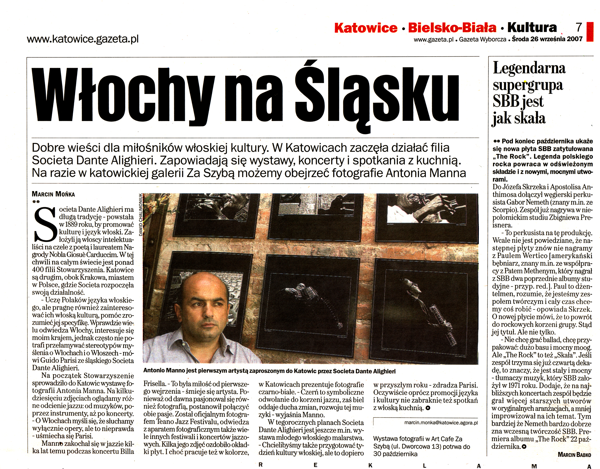

Il reportage su Auschwitz unisce rigore documentaristico e sensibilità visiva. Una documentazione in bianco e nero realizzata nei luoghi della memoria, per riflettere e non dimenticare. Le immagini sono state esposte in diverse sedi in Italia e all'estero.
Mostre
- Katowice (PL) 2007 – Galleria Za Szybą

A Katowice ha iniziato a operare la filiale della Società Dante Alighieri. Stanno organizzando mostre, concerti e spettacoli con artisti provenienti dalla penisola appenninica. Per ora possiamo vedere le fotografie di Antonio Manno nella galleria di Katowice Za Szybą. La Società Dante Alighieri ha una lunga tradizione - è stata fondata nel 1889 con l'obiettivo di promuovere la cultura e la lingua italiana. I suoi fondatori furono il poeta e premio Nobel Giosuè Carducci. Katowice è la seconda, dopo Cracovia, città in Polonia dove la Società ha iniziato le sue attività.
L'obiettivo della Società è la lingua italiana, ma vogliamo anche promuovere la cultura italiana, aiutare a comprenderla. Per il giorno di San Silvestro la Società ha portato a Katowice una mostra fotografica di Antonio Manno. Sotto la lente del fotografo sono finiti diversi bambini che guardano il mondo in modi diversi, a Katowice presenta fotografie in bianco e nero. - Ciò che il simbolo è il colore - dalle radici della luce allo sviluppo della loro vita spirituale interna.